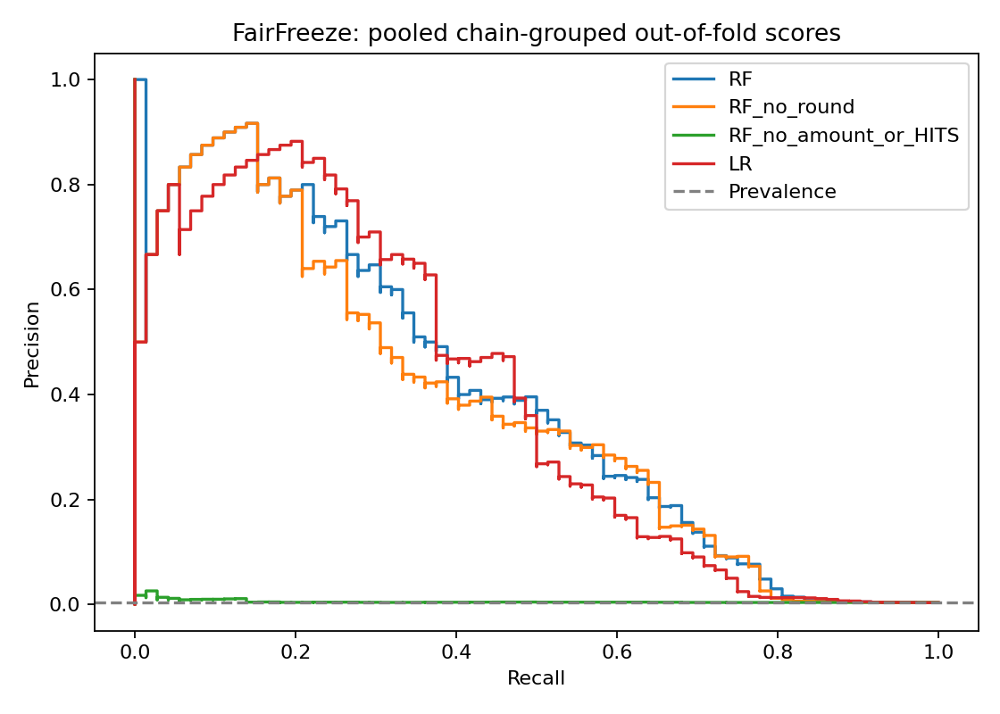

FRAUD CHAIN RESEARCH · SYNTHETIC DATAFairFreeze
Rank accounts for investigation. Review the evidence behind each score. Any hold requires an independently verified complaint, fund tracing and authorized human decision.
Chain-held-out evaluation
Thresholds are selected inside training folds at an exploratory 80% precision target. Outer-fold precision may be lower. Scores are uncalibrated; top-k scores from different fold models are diagnostic.
Account evidence
Precision–recall

Feature selection previously used the original chain. Full-graph features assume the entire transaction snapshot is available at scoring time. This is not a prospective temporal evaluation.
Amount sensitivity
These interventions modify aggregate amount features while holding graph and flow features fixed. They are sensitivity probes, not realistic generator stress tests.